Introduction
During the introduction week, we worked on a branding project for a client. Our goal was to help the client (Nathalie) understand her own branding better. Our client is a painter and wants to showcase her art work in a much better way. We have to represent it visually to her through various means such as a branding guide, content strategy, website prototype, and finally, a presentation with the client. Throughout this process, we conducted extensive research and communicated with the client and others through surveys, interviews, and other methods.
LO1 – Interactive media products
Client meeting
Our first interaction with our client was a online meeting were we could ask a lot of questions with also other groups. And our findings in the end were there is no real meaning behind the paintings, but more like a invitation if you like it or not. Also a big thing was that here audience group was not clear yet. She seeks for inspiration at Pinterest other artists she likes. She likes colours/light and impression is important for her. It doesn’t have to be 100% what to expect. For the logo she likes minimalistic designs thru the whole website etc. She likes blossoms, because here birthday is in Spring. Blooms also give the feeling life life and enjoy each moment. The guidelines for prices are based on the width * height x 2. For the canvas + painting, she does paintings on commissions. The brand should make people curious and a bit mysterious and as last she also likes have Koffiekeuten in the website so you know were to visit to see some paintings of her.
Target audience
To understand our target audience better, we conducted a survey with approximately 25 participants from the city of Eindhoven, ensuring a diverse age range. The survey included crucial questions regarding participants' history of online art purchases, their budget for art, where they typically make art purchases, and which platforms they use for buying art (social media or websites).
Our survey was conducted with Survio. The survey revealed that the age range of our target audience falls between 19 and 39 years old. A significant number of respondents indicated that they prefer to buy art online through websites, with Instagram being the primary platform for discovering art. Their primary motivation for purchasing art online is to decorate their homes. Price points typically range from 15 to 80 euros, and respondents prefer to communicate via email when making purchases.
Link: https://www.survio.com/survey/d/T7M1L4J0L6L9F8C2BTypography
Based on our target audience and our client’s opinion and preferences we’ve seen a common share such as artistic elements. Artistic elements mostly steer a way towards serif fonts, rounded corners and artistic flairs.
After a through process of research and testing, we selected the “Optima” font for beautiful headings and the “Roboto” font for larger amounts of text to achieve an easy readability.
Logo design
For our logo design, we focused on three key elements: typography, colour, and elements reflecting our client's identity. We opted for the "Optima" font and selected a lighter shade of our client's preferred pink hue. The decision to incorporate dark pink into our colour palette was influenced by our client's preferences. We embraced this idea, aiming for dark pink lettering to convey ambition, reflecting Nathalie's personality. And as last to reflect more on our logo typography we wanted to use our client’s full name because it becomes more professional and your own if you use it like that
A specific requirement from our client was to include a blossom in the logo. After deliberation, we determined that the cherry blossom would be the most suitable choice for our client's brand identity. Not only does the cherry blossom's colour align with the brand's colour palette, but its symbolism also resonates with our client's values. The cherry blossom represents new beginnings and growth, which perfectly embodies our client's ethos.
Colour palettes
Our clients colour preference was a colour scheme with pink and gold. In response we conducted a search for colour palettes that incorporated the pink, gold & dark tones while also aligning with consistency and popularity criteria. After thorough consideration, we identified three potential palettes meeting the client’s specifications and user preference criteria.
Colour palettes interview
We conducted in-person interviews with 15 randomly selected individuals to gather feedback on the three colour palettes. The first colour palette was a to light, some people couldn’t see the colours correctly and the second colour was to flashy and the last one that fit almost every thing of our clients criteria and preferences was a palette without the gold, but with a darker pink. The darker pink was also a suggestion of our client during the first client meeting (see LO1 – client meeting) to make it more mysterious.
Interactive prototypes
In Figma, you can link pages together and create interactive prototypes easily. We did this specifically for our presentation to demonstrate a smooth flow of the demo. In our case, we focused on linking the menus to showcase their functionality.
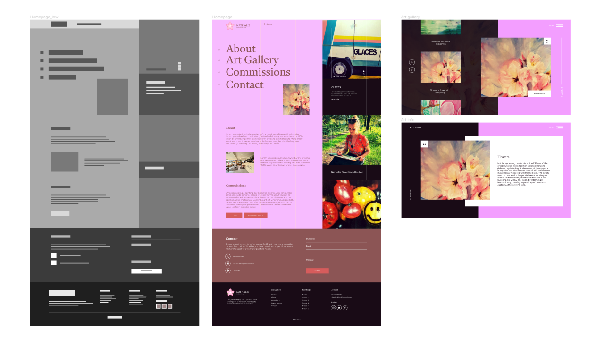LO2 – Development & version control
I received a JavaScript assignment that required me to use modules and display a joke in the terminal based on that module. Although I hadn't used the terminal much before, I found it enjoyable to explore new things and figure them out on my own. In the end it wasn’t to difficult, and it was very self explaining.
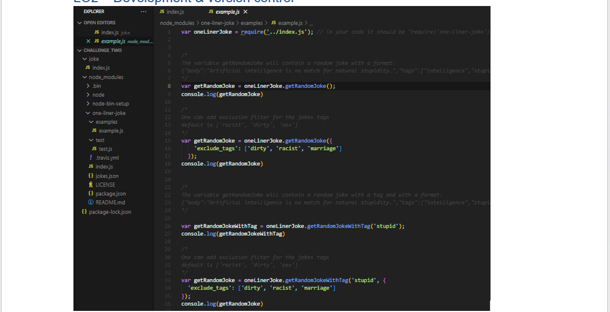LO3 – Iterative design
Branding guide
The branding guide was crafted using Illustrator, and it's presented as a PDF document to illustrate the brand identity effectively. Initially, I started with a basic layout in Illustrator, guided by the research conducted on what elements should be included in the branding guide. I focused on structuring the document and organizing the content according to the guidelines and information gathered.
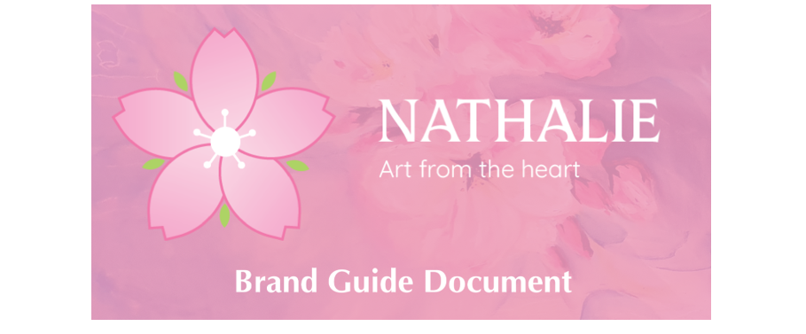I started by designing the logo. At first, I made some small changes. Initially, the logos didn't include any text; they were focused on capturing Nathalie's style. After creating several logo options, we presented them to our client for feedback. Based on her preferences, we finalized the logo. She selected the top logo and simplified it in the last iteration by using outlines and adding a subtle color. We also included the text "Nathalie" and a slogan to represent her. Finally, we asked feedback from 10 students, and they all expressed satisfaction with the design.
This all has been created in Illustrator, I had some prior knowledge, this made me already familiar with most tools, but still have to learn a lot about all those options in illustrator itself. I mostly made use of the rotating tool in all my logo’s, because of simplistic and round blossom/flower shapes.
As last I think this really helped improve my illustrator and photoshop skills by just creating logos and iterations.
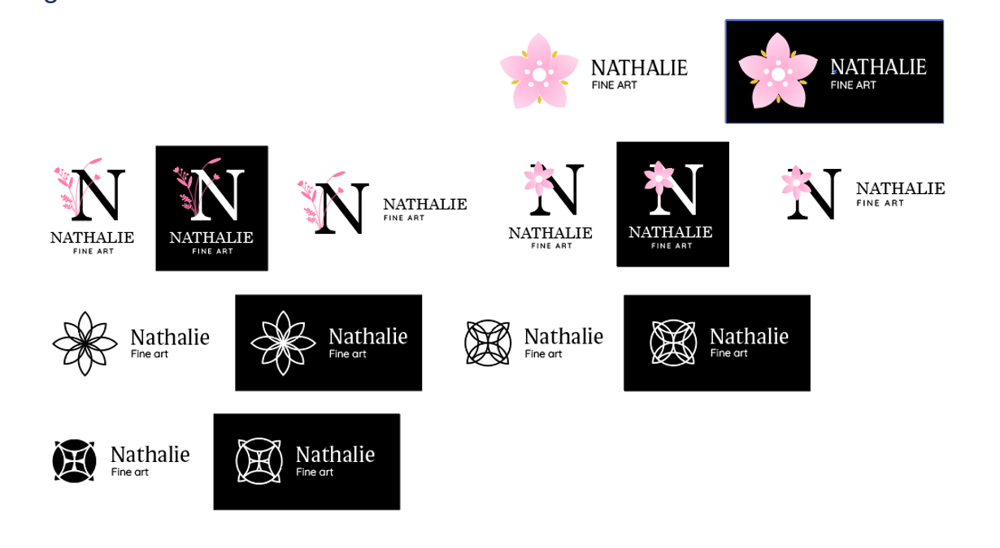 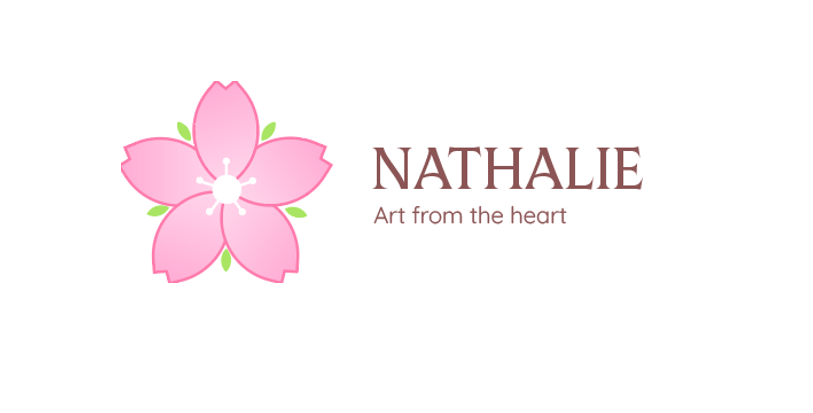Figma prototype
I created these iterations to figure out which homepage design would best navigate and showcase our client's art. We did this because we received feedback asking about our client's purpose. Is it to navigate for her art, or to show the art instantly? We also asked our client, and she mentioned she preferred easy navigation. This way, even if someone is unfamiliar with her, they can still find her art easily.
With the feedback we got, we wanted to make high fidelity ones of the best 3 and choose out of that to get a indication what works and what doesn’t work.
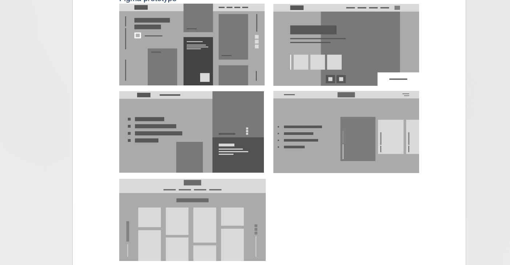We decided on the homepage with easy navigation. It looks artistic, which we liked a lot. Our client also preferred this one the most. So I developed it further
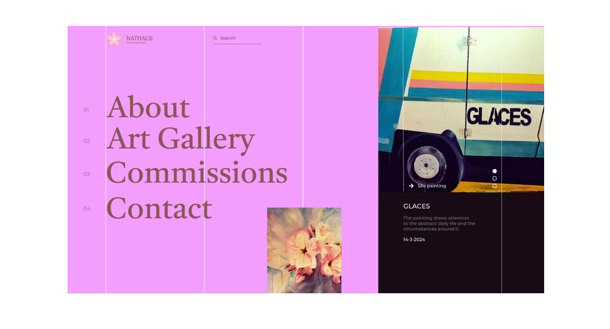We’ve got some feedback from a expert on the last iteration that the readability wasn’t going well with the background colour contrast and the logo should be bigger to pop out more, so I changed that in one of our last versions.
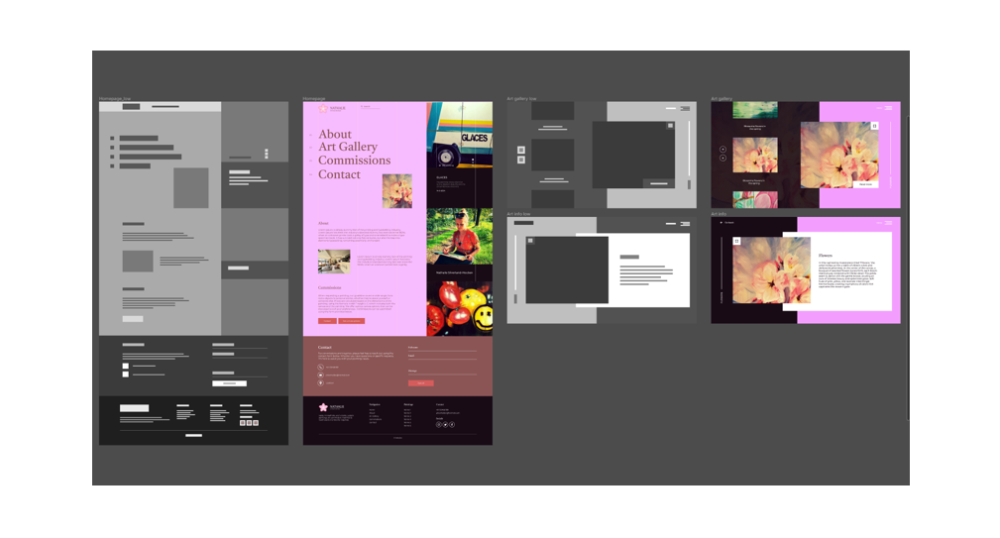LO4 – Professional standard
Firstly we addressed our missions & objectives through the project to know what we are working towards. Also the scope of the project is very important, so every has a understanding of how many weeks it is, so everything get finished on time and there is no miscommunication because of that. As last our roles, so everyone knows where to step in and the overall communication guidelines to make the workflow & workplace nice. As last our resources & support so everyone knows where to ask feedback and were to jump in with there own skills.
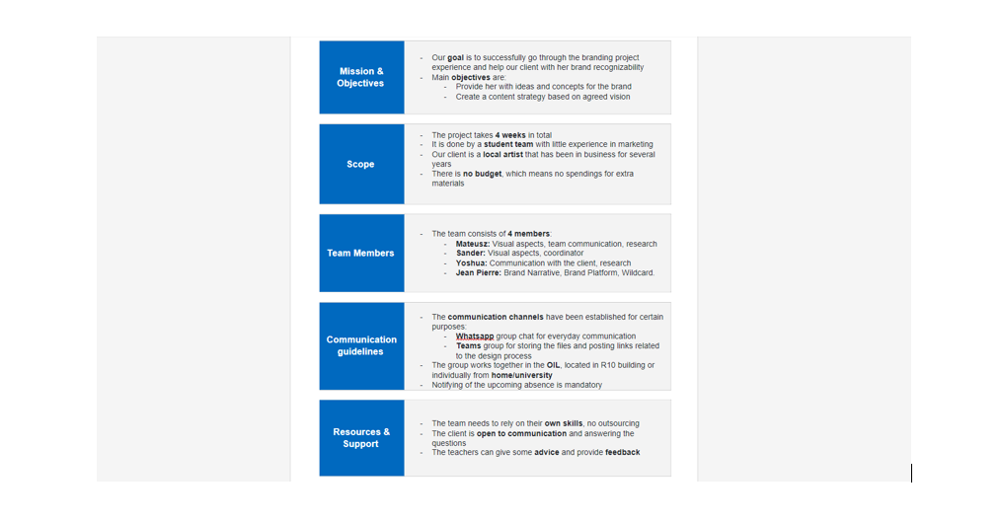Throughout the process of working and developing together we had to keep up with our progress, so we made a Trello, to have a nice way of communication thru tasks that are set based on a date and time. I just checked my work when I was done, and put it in trello.
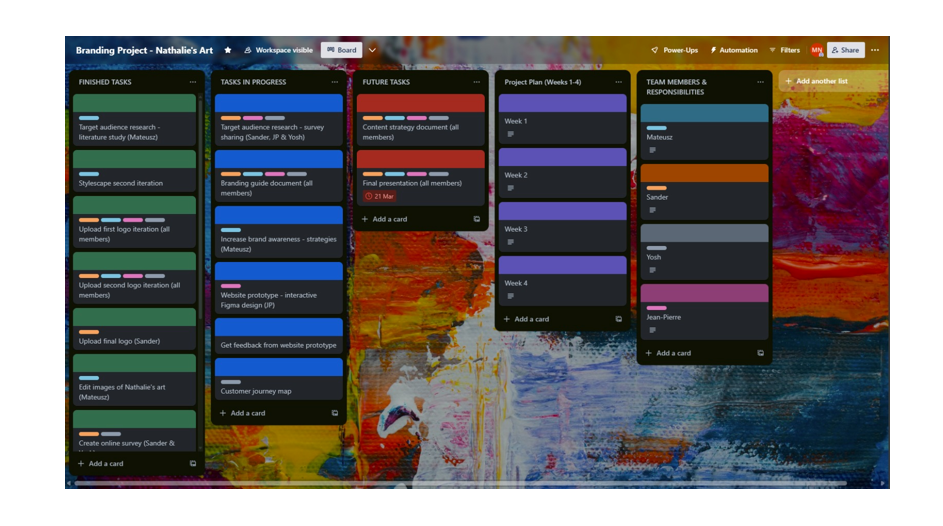Presentation
For our presentation, we included all aspects: the brand guide, strategy, and prototype. During the presentation, I conducted the prototype demo since I had a good understanding of each element. I also improved my verbal presentation skills for a real client during the presentation, which I found enjoyable and beneficial.
During the presentation, I showcased the full Figma prototype and mockups of the prototype. This allowed the client to see how the prototype would look in real life. I personally found this aspect very pleasing.
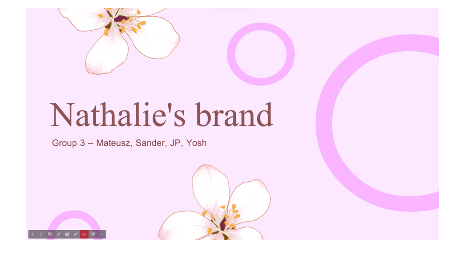 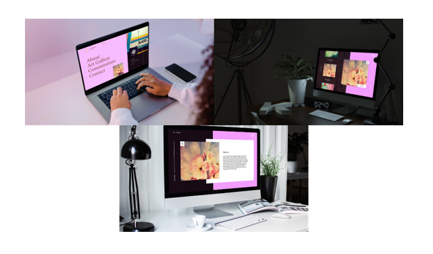Branding guide
To craft a branding guide, we delved into its definition and purpose. A branding guide serves to present a brand's colors, fonts, and overall style. It encompasses the usage guidelines for logos, colors, style, imagery, iconography, typography, copywriting voice, tone, and illustration.
I also explored the reasons behind having a branding guide. It aids in ensuring effective content marketing and offers several benefits such as articulating the brand's vision, mission, and values. The key advantages include fostering consistency, enhancing branding recognition, improving efficiency, and mitigating risks.
Stylescape
To create a stylescape, we referred to an article explaining its concept and significance. According to the article, a stylescape is a collection of visual elements such as logos, images, typography, and colors that portray and represent a brand's identity. Essentially, it functions as an enhanced version of a mood board
Stylescapes serve multiple purposes. They provide a clear direction and vision for the brand, aiding both designers and clients in visualizing the brand's identity. Additionally, they help identify any aspects of the design or ideas that may not be working effectively. This flexibility allows for easy adjustments during the creative process, as the stylescape serves as a dynamic reference point similar to a mood board. This adaptability is a crucial aspect of its utility.
L05 – Personal leadership
Asking for feedback from my teammates was easy because we could communicate well and discuss things openly. However, I realize I should have sought feedback from other teachers more often. I only did this twice during the project, which is not enough. In the future, I plan to schedule feedback sessions into our project planning to ensure we don't miss out on valuable input from others.
During this period, I've grown in my understanding of the importance of UX (User Experience) and why it's crucial. Also I know now why planning and organizing is one of the key factors of creating a good product with a team. This knowledge is beneficial for me as I pursue a career as a frontend developer. I enjoy gaining insight into the entire process from start to finish.